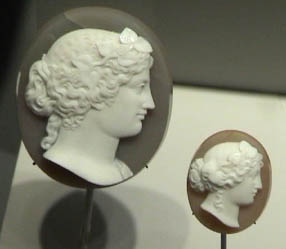

|
Quartz is silicon dioxide, SiO2. Quartz is abundant in the Earth's crust, being the chemically simplest form of the silicates. All the samples here are displayed in the Smithsonian Museum of Natural History. One of the distinctive varieties of quartz is called onyx. The samples at right have a maximum dimension of about 3.5 cm and are from Brazil.
|  |